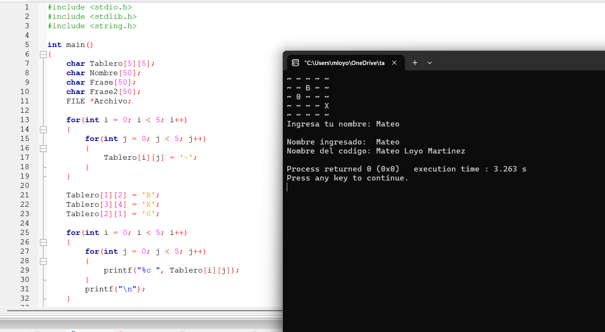
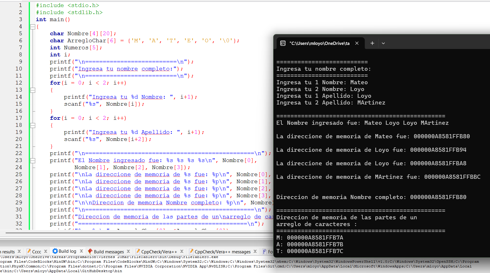
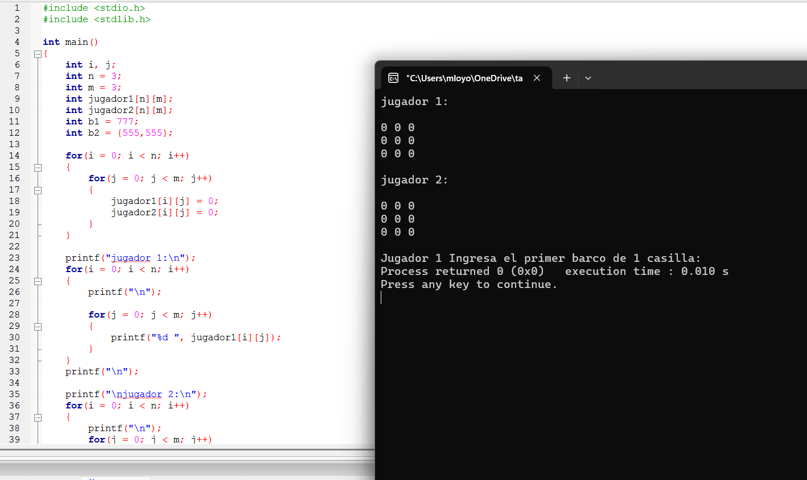

Programación Estructurada en C · Mateo Loyo Martinez
Programas que demuestran la declaración, inicialización, acceso y manejo de matrices bidimensionales en lenguaje C, incluyendo el uso de matrices de caracteres, análisis de direcciones de memoria y manejo de archivos con matrices.
gcc Matriz.c -o matrizgcc Matriz_Nombre_Completo.c -o matriz_nombregcc File_Martriz.c -o file_matriz./matriz./matriz_nombre./file_matriz

